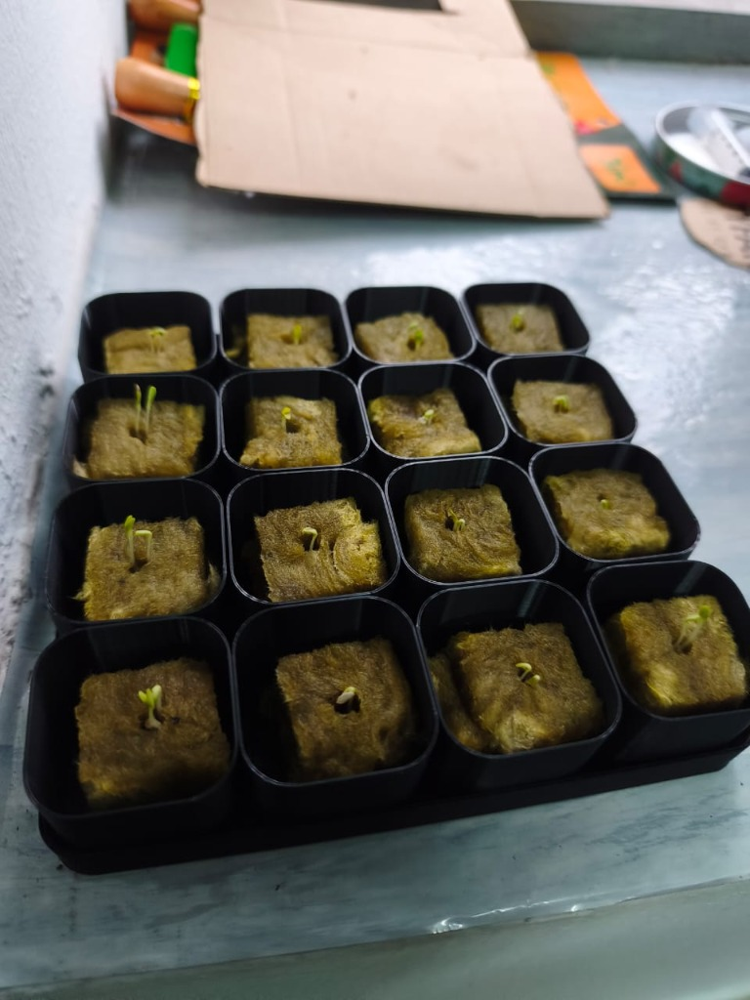
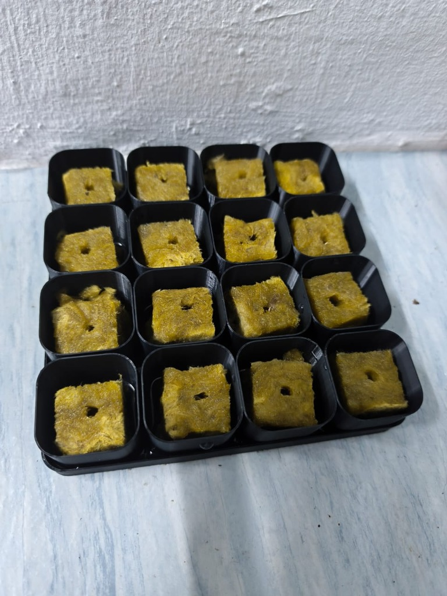

Kaedah Kratky Pasif (Tanpa Pam & Elektrik) Menggunakan Benih Framoc Eco-Shop & Penjejak Tumbesaran Pintar Sedia Mula.
Perkembangan cemerlang pada Hari Ke-3 (28 Oktober 2026): Kesemua 16 kiub rockwool (100%) telah berjaya menembusi permukaan dan membuka daun kotiledon (daun benih) hijau kekuningan yang segar. Tunas-tunas berdiri memacak dengan cergas. Tindakan wajib paling penting hari ini ialah memindahkan dulang ke pencahayaan matahari pagi (3–4 jam) agar anak benih tidak mengalami etiolasi (kutilang), di samping mengekalkan kelembapan rockwool dengan air paip bersih (tanpa sebarang baja lagi).
16 kiub rockwool dibasahkan dengan air paip bersih sekata tanpa air bertakung lemas.
Biji benih diletakkan di celah atas permukaan kiub pada 25 Okt 2026.
Berjaya melalui fasa inkubasi 24–48 jam. Tunas putih & embrio pucuk berjaya keluar.
Kotiledon sudah menghijau! Letakkan dulang di anjung/tepi tingkap untuk terima matahari pagi 3–4 jam agar tunas tegap dan tidak kutilang.
Rekod visual & diagnosis AI mengikut perkembangan harian semaian salad Framoc anda

Hari Ke-3 • 28 Okt 2026 • 16/16 Kiub Rockwool Bercambah Seragam (100% Success Rate)Berita yang amat membanggakan! Pemeriksaan visual ke atas kedua-dua foto bertarikh 28 Oktober 2026 (Hari Ke-3) mengesahkan bahawa tanaman salad Framoc anda telah mencapai kadar percambahan 100% (16 daripada 16 kiub rockwool berjaya bercambah)! Tiada satu pun kiub yang culas atau gagal. Kotiledon (sepasang daun benih pertama) telah merekah keluar dan bertukar ke rona hijau kekuningan segar berkat keaktifan awal pigmen klorofil. Batang embrio (hipokotil) kelihatan memacak tegak dan tegap.

Hari 0 • 25 Okt 2026 • Semaian 16 Kiub Rockwool (Dulang Hitam 4×4)Tahniah atas permulaan projek kedua anda! Foto rasmi semaian bertarikh 25 Oktober 2026 (Hari 0) memaparkan 16 kiub rockwool dipotong seragam dan disusun rapi dalam dulang semaian hitam (grid 4 × 4). Media kelihatan menyerap air paip bersih dengan sekata tanpa banjir bertakung. Ini adalah langkah permulaan yang sempurna mengikut standard hortikultur hidroponik!
Saksikan evolusi pantas benih salad Framoc dalam tempoh 72 jam pertama di atas media rockwool.
Spesifikasi tepat daripada bungkusan fizikal benih tanaman anda
Ketahui pelarasan teknikal agar semaian salad anda tidak pahit atau layu
Rujukan panduan fasa demi fasa dari percambahan hingga tuaian segar
Langkah Pelaksanaan:
Langkah Pelaksanaan:
Langkah Pelaksanaan:
Langkah Pelaksanaan:
Langkah Pelaksanaan:
Dua Cara Menuai Salad:
Kira sukatan ml cecair Pati A & B mengikut kapasiti takungan dan toleransi khusus salad
Semua keperluan sedia ada yang boleh digunakan serta-merta
1 pek ±1gm (Barcode: 62035066, Exp 2029). Simpan baki benih dalam beg zip kedap udara.
Media tanpa tanah yang bersih dan mudah ditembusi akar halus salad.
Pati cecair siap bancuh anda. Sukatan salad menggunakan dos lebih nipis (2.0–4.0 ml/L).
Boleh guna takung biru, bekas makanan hitam, atau balang kaca dibalut foil kalis lumut.
Model khas "Mini Hydro Net Insert Pot (90 ml Cup Compatible)". Muat tepat dalam cawan 90ml untuk semaian/micro-Kratky atau ditebuk masuk ke penutup takung besar. Cetak menggunakan filamen PETG/PLA gelap.
Sangat berguna untuk menyemak bancuhan agar tidak melebihi paras selamat salad (1.4 mS/cm).
Langkah pencegahan awal untuk kualiti salad yang rangup dan manis
Hujung daun menjadi coklat, kering atau terbakar. Ini berpunca daripada kepekatan baja terlalu tinggi atau kekurangan kalsium akibat pengudaraan yang kurang.
Pokok tiba-tiba memanjang ke atas dan mahu berbunga. Ini berlaku jika pokok mengalami kejutan haba panas terik (>34°C). Getah putih pekat akan keluar dan rasa jadi pahit.
Batang anak benih kurus panjang melidi dan mudah rebah kerana diletakkan di tempat terlalu gelap selepas benih bercambah.
Lumut tumbuh membiak jika air takungan baja terkena cahaya matahari langsung, merebut nutrien pokok dan menyebabkan bau busuk.
Jawapan kepada persoalan biasa bagi penanam salad pemula